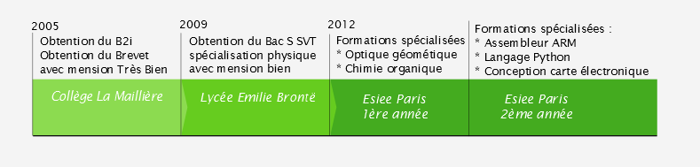
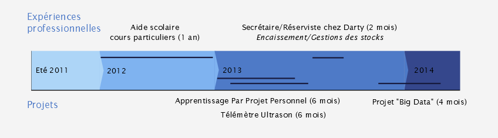

- Apprentissage Par Projet Personnel* (A3P), 6 mois
Réalisation d'un jeu d'aventure textuel "Zork en Java sous BlueJ. Programmation orientée objet, jeu piloté par souris et clavier avec interface graphique légère
- Télémètre Ultrason* 2013, 6 mois chef de groupe partie numérique
Programmation d'un microprocesseur PIC : mesure de temps, conversation héxadécimale - décimale, élaboration d'un algorithme de calcul et gestion d'affichage des résultats sur un écran LCD.
- Projet "Big Data", Chef de groupe
Extraction dynamique de données à partir d'un site HTML et de fichier CSV avec le logiciel SCITE. Analyse et présentation des résultats sous forme d'histogrammes et de mappemondes en Python.
- Technique
- Langage haut niveau : Java, Langage C, Python, Arduino
- Langage Web: HTML/CSS
- Langage bas niveau : Assembleur PIC et ARM
- Système d'exploitation : Windows Xp/7
- Software : Pack Microsoft Office
- Vie Associative
- 2014-2015 : Responsable Branche Logistique BDE ESIEE Paris "Ferus"
- 2013-2014 : Pôle communication BDE ESIEE Paris "Huguette"
- 2012-2013 : Responsable pôle Information Comité d'Intégration 2013